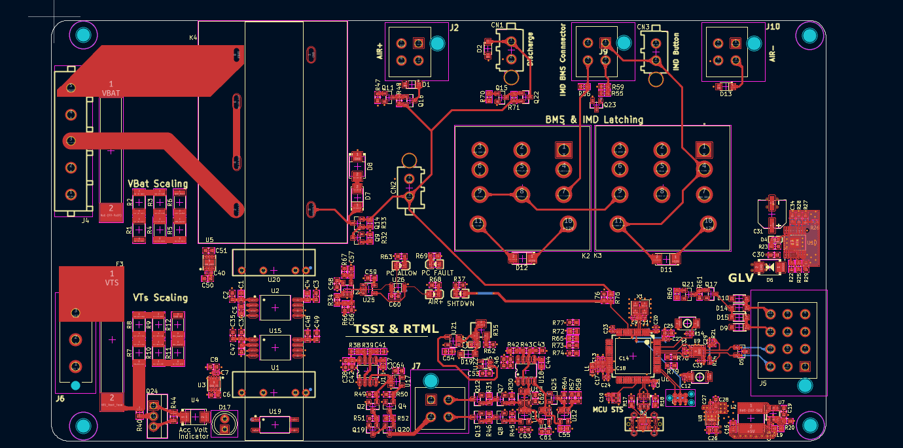

Tractive System Control Board In progress

This is the board I'm designing right now for NYU Motorsports. It's a redesign of the team's HV Precharge and Indicator PCB from last year, built in KiCad, and it's still a work in progress.
What I'm changing
Lamp check on power up. I added lamp check logic so that when the car's low-voltage (GLV) system powers up, the board lights the Tractive System Status Indicator, the Ready to Move Light, and the BMS and IMD cockpit lights. That way you can see every indicator works before the car goes anywhere.
A working Accumulator Voltage Indicator. Last year's indicator failed electrical tech inspection. I redesigned the circuit so it's powered directly from the tractive system (up to 480V), using a 900V current regulator and a 56V Zener threshold.
Fixing the IMD relay latch. I tracked down a latching failure in the IMD shutdown relay and designed a MOSFET circuit so the relay latch can actually engage.
